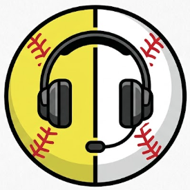

Professional Signaling & Scouting Suite v1.1.26 (Code 27)
Pitch Caller Elite is the professional command center for modern baseball and softball batteries. Designed for the dugout and built for the grind, this suite moves your signaling from the fingers to the catcher's earpiece, ensuring 100% stealth and zero stolen signs.
LONG-PRESS any button to rename it or change the voice sign. Match your team's unique terminology, secret codes, and pitch mix.
Go beyond 3x3. Utilize the Advanced Matrix for pinpoint accuracy, tracking "chase" balls and diagnostic outcomes with precision.
Broadcast signs instantly to any Bluetooth earpiece. Adjustable pitch and speed ensure crystal clear delivery in any environment.
Built-in push-to-talk Walkie-Talkie for real-time adjustments or calling tactical timeouts without leaving the dugout.
Generate high-fidelity PDF reports with dynamic density and success heatmaps. AirDrop or text them to your staff instantly.
Identify exactly when your pitcher starts losing command with visual fatigue tracking and load analytics.
Last Updated: September 2026
Pitch Caller is built for elite tactical security. We follow a strict Zero-Data Collection policy to ensure your competitive edge stays in your dugout.
Support & Data Deletion Requests: pitchcaller.support@gmail.com
Pitch Caller is for informational purposes only. It is the user's sole responsibility to ensure that electronic communication devices are permitted by their specific league or tournament rules. The developer is not liable for any injuries, accidents, or game outcomes resulting from the use of this software. © 2026 Manuel Eugenio.